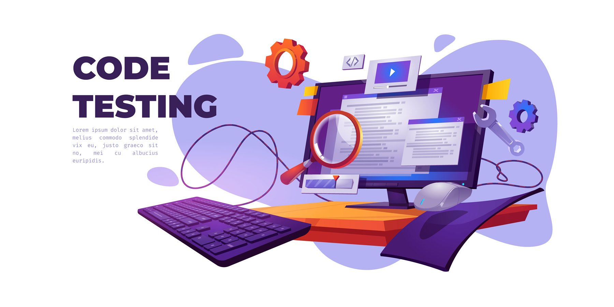

User Researcher
What a user researcher does
User researchers plan, design and carry out research activities with users that help teams get a deep understanding of the people that use government services. This research informs policy, proposition, service, content and interaction design so that services work well for users and achieve policy intent.
Find out what our colleagues think of their job here!Software Developer
What a software developer does
A software developer designs, runs and improves software that meets user needs. They use coding languages like building blocks to create programs and apps that solve problems and make life easier. They're always learning and adapting to new challenges in technology.
Find out what our colleagues think of their job here!Tester
What a software tester does
A software tester searches for bugs and glitches in computer programs. They carefully explore every corner of the software, trying to Find any hidden problems before it's released to the world. By finding and fixing these issues, they ensure that the software runs smoothly and brings joy to its users.
Find out what our colleagues think of their job here!Business Analyst

What a business analyst does
A Business Analyst investigates how their company can work better and support with product development like new software systems. They talk to lots of people to understand how the business works, identify improvement opportunities and help leadership teams to make decisions. By finding ways to improve how businesses run, they help make the world of work more efficient, modernise and make changes.
Find out what our colleagues think of their job here!Interaction Designer

What an interaction designer does
An interaction designer creates easy-to-use interfaces for websites and apps. They think about how you tap, swipe, and click, making sure everything feels just right. By designing fun and intuitive experiences, they make sure using technology is as awesome as it can be for everyone!
Find out what our colleagues think of their job here!Engagement Officer
What an engagement officer does
An engagement officer designs and develop training and promotional material for new software systems, assist with governance and business cases for new projects and ensure various stakeholders are informed and involved as projects progress.
Find out what our colleagues think of their job here!Delivery Manager

What a delivery manager does
An IT delivery manager oversees projects to make sure they meet their aims on time and smoothly. They work with teams of tech experts to bring awesome ideas to life, like creating new apps or updating websites. By keeping everything organized and running smoothly, they help make sure the tech we use every day keeps getting better!
Find out what our colleagues think of their job here!